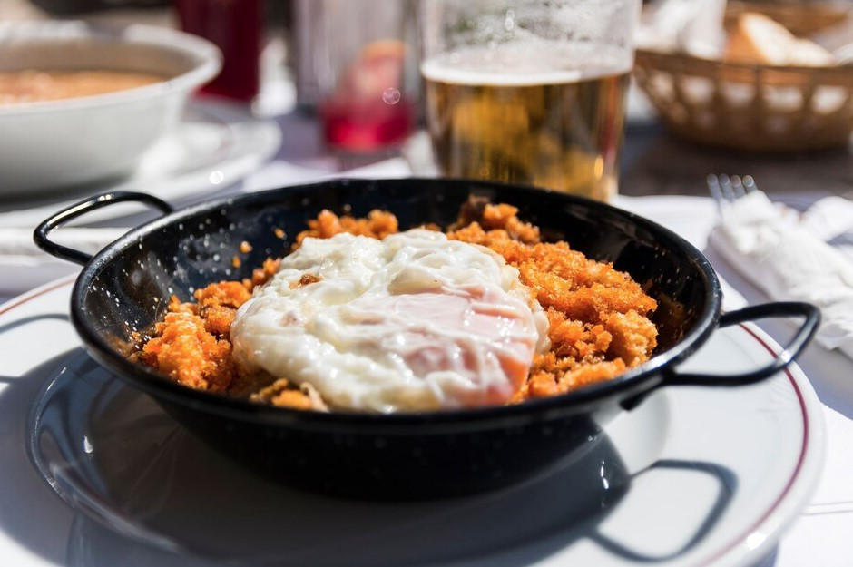

recetas

No es ningún secreto que la observancia de los principios de una nutrición adecuada es la clave para una buena salud, bienestar, belleza impecable y, por supuesto, una figura perfecta, pero de acuerdo, es muy difícil mantener una nutrición equilibrada cuando en cada esquina acecha la tentación en forma de varias comidas rápidas, panaderías y etiquetas brillantes, atractivas en los paquetes de productos no útiles.
Andalucía y su secreto para salvarse del calor agotador — gazpacho
En los meses de verano, no hay mejor escape del calor en el sur de España que la sopa de tomate gazpacho bien fría. Además de los tomates, se le agregan pepinos, cebollas, aceite de oliva y ajo, y se sirven, por regla general, con tostadas y pimientos rojos. Según una de las leyendas culinarias, la sopa fue inventada por los cazadores de mulas españoles, que siempre tenían a mano los productos anteriores. Hoy en día, este plato tradicional español es una de las sopas de tomate más famosas del mundo.

La paella es un plato ilustre de Valencia
Hoy en día, en España se pueden encontrar muchas variaciones de la famosa paella, pero en cualquier caso, su ingrediente obligatorio será el arroz. Tradicionalmente, los habitantes rurales de España hacían paella con los productos que estaban disponibles para ellos, agregando al arroz pollo, conejo y verduras típicas de Valencia, por ejemplo, habas de Lima o habas de azúcar. Pero a lo largo de los siglos, la receta de la paella ha sufrido una serie de cambios, y hoy en día en España es más popular el arroz con mariscos, por ejemplo, con camarones y sepias. La paella clásica se puede probar en las playas de Valencia.

Migas de Teruel-sencillo y de buen gusto
No se puede visitar Teruel ni probar las migas de Teruel. Se prepara con bastante facilidad: el pan se corta, se remoja durante un día en agua con sal y luego se fríe con aceite y ajo, revolviendo continuamente. El resultado es un plato muy inusual, sabroso y abundante de migas de pan, algo parecido al cuscús. Para una mayor saturación de sabor, se pueden agregar trozos de cerdo, salchichas o incluso uvas a las migas.
Berenjenas catalanas con pimientos-aperitivo sabroso
Para cocinar berenjenas catalanas con pimientos rojos, las verduras se mantienen sobre un fuego abierto o se asan a la parrilla hasta que la cáscara se ennegrece. Luego cubra con un plato y enfríe, después de lo cual las berenjenas y los pimientos se pelan y se cortan en tiras. Consejo: no intente enfriar las verduras con agua fría, ya que perderán su jugo, lo que le da al plato un sabor y aroma característicos. En la mayoría de los lugares, las verduras se sirven con pan tostado empapado en jugo de tomate y aceite, anchoas y cebollas y, a veces, atún.